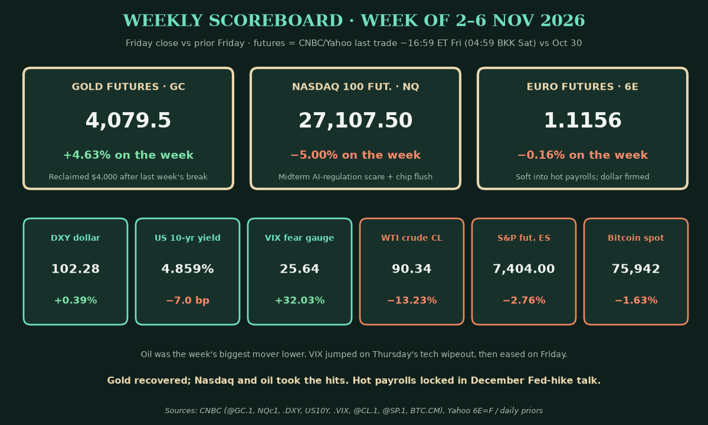
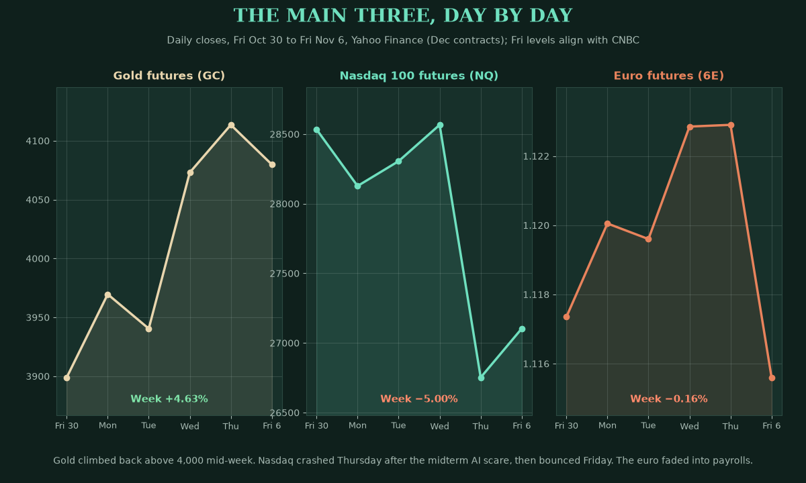
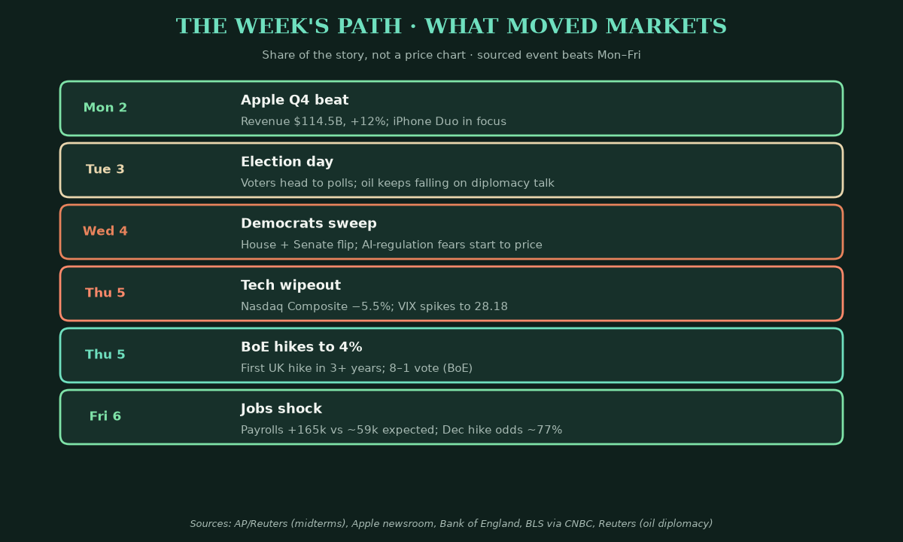
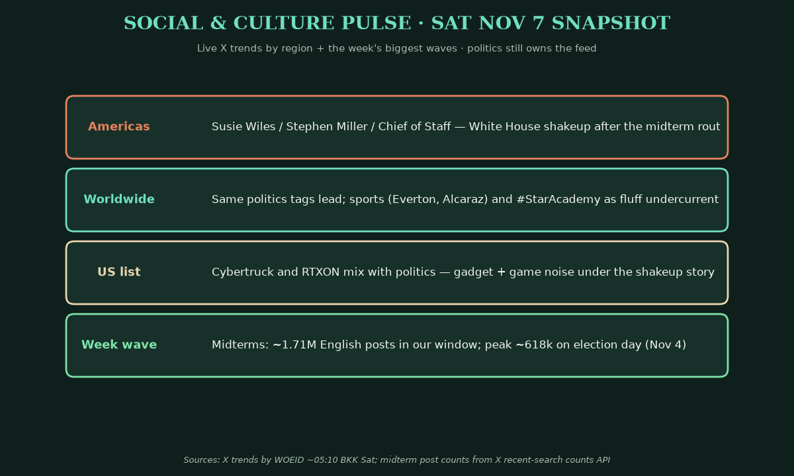
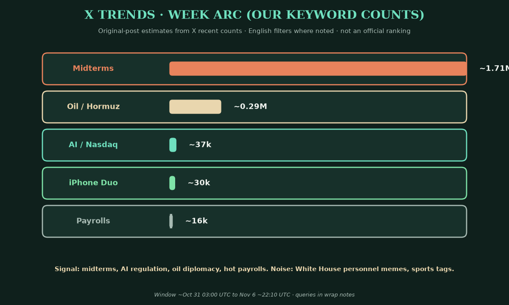
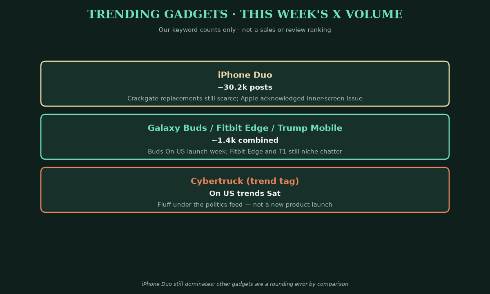
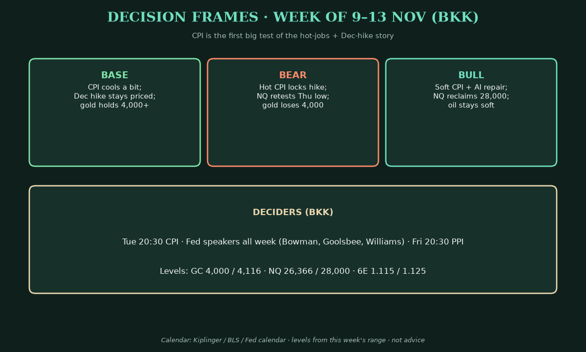

Saturday Weekly Markets Wrap · Sat Nov 7, 2026 (BKK)
April · Weekly Markets Wrap · 2026-11-07
Week of Mon Nov 2 to Fri Nov 6. Futures are CNBC or Yahoo last trade near 16:59 ET Friday (about 04:59 Saturday Bangkok time), against the prior Friday's close or settle, unless noted.
Headline: Democrats took Congress, AI sold off hard, and payrolls shocked hotter. Gold futures rose 4.63% to 4,079.5. Nasdaq 100 futures fell 5.00% to 27,107.50. The euro slipped 0.16% to 1.1156.
So what? Voters flipped the House and Senate. Markets priced tighter AI rules and crushed chips on Thursday. Friday's jobs print — 165,000 versus about 59,000 expected — pushed December Fed-hike odds toward 77%. Oil crashed on diplomacy hopes. Gold climbed back above 4,000 even as hike talk returned.

1) The main three
The takeaway: gold repaired last week's break, Nasdaq took a midterm gut-punch, and the euro barely moved until payrolls.

- Gold futures (GC, Dec): 4,079.5, +4.63% on the week, at 04:59 BKK Saturday (CNBC @GC.1; Yahoo within a tick). Driver: cheaper oil and a bounce after last week's flush below 4,000 (CNBC, Reuters).
- Goldman cut its end-2026 gold target to $4,150 from $4,650 (Investing.com).
- Nasdaq 100 futures (NQ, Dec): 27,107.50, −5.00%, at 04:59 BKK (CNBC NQc1). Driver: Democratic wins sparked AI-regulation and data-centre fears; chips led (Reuters, AP, CNBC).
- The Nasdaq Composite fell about 5.5% Thursday before a Friday repair (Yahoo, CNBC).
- Euro futures (6E, Dec): 1.1156, −0.16%, at 04:58 BKK (Yahoo). Driver: a firmer dollar into hot payrolls; spot near 1.1143 (CNBC).
Context. DXY was 102.279, +0.39% (ICE via CNBC). The US 10-year yield ended at 4.859%, down 7.0 basis points on the week (CNBC; a basis point is 0.01 percentage point). The VIX was 25.64, +32.03%, after Thursday's 28.18 (Cboe via CNBC/Yahoo). Crude (CL) closed at $90.34, −13.23% on Iran diplomacy hopes (CNBC, Reuters). ES was 7,404.00, −2.76%. Bitcoin was $75,896, −1.69% as of 05:27 BKK Sat (CNBC/Coin Metrics).
2) What happened
The takeaway: midterms rewrote the AI trade, the BoE hiked, oil collapsed, and payrolls landed hot.

- Democrats won the House and Senate. Wire tallies put the Senate near a 54–44 edge and a large House majority (Reuters, AP).
- AI stocks were punished. The "Magnificent 7" lost about $1 trillion in market value Thursday on regulation fears (CNBC). Nikkei −9.25% on the week; Kospi −11.71%; Philadelphia semiconductors −12.15% (Yahoo).
- Apple still beat. Fiscal Q4 revenue $114.5B (+12%), diluted EPS $2.10 (+14%), record September iPhone and all-time-high Services (Apple newsroom, Nov 2).
- The Bank of England hiked to 4% from 3.75%, 8–1, the first UK hike in more than three years (Bank of England, Nov 5).
- Oil fell hard. WTI dropped from a $104.12 prior-Friday settle to $90.34 on US–Iran diplomacy hopes (CNBC, Reuters).
- Payrolls shocked. October nonfarm payrolls +165,000 vs about 59,000 expected. Unemployment 4.1%. Wages +0.4% month / +3.1% year. Prior months revised up 84,000 combined (BLS via CNBC). December hike odds rose to about 77–81% (CNBC, Kiplinger).
- Scoreboard. S&P 500 7,376.86 (−2.68%). Nasdaq Composite 24,579.42 (−3.37%). Dow 51,285.73 (−0.94%). Russell 2000 −2.05% (Yahoo).
Mentor beat: a political shock and a data shock in the same week. The first hit growth stocks. The second hit the "Fed is done hiking" story. Keep those maps separate.
3) Social and culture pulse
The takeaway: midterms owned the week; by Saturday the feed was White House personnel drama.

- Americas / worldwide. Susie Wiles, Stephen Miller and "Chief of Staff" topped Saturday lists after the rout (X trends).
- US / fluff. Cybertruck, #RTXON, Alcaraz and football tags sat under the shakeup story. Japan's list stayed local TV/food (X trends).
4) X trends: the week arc
The takeaway: midterms drowned every other topic; oil and AI were the market signals underneath.

- Midterms: about 1.71M English posts, peaking near 618k on Nov 4.
- Oil / Hormuz / crude: about 295k, steady as prices slid.
- AI / Nasdaq / chips: about 37k, spiking Thursday–Friday.
- Payrolls: about 16k, almost all Friday. iPhone Duo: about 30k, flat.
- Lean scan (leads only). Timiraos flagged strong payrolls and a Democratic Senate as a Fed-independence check (aligns with BLS/CNBC). Tavi's "Fed near end of hiking" take conflicts with ~77% Dec odds — not used as fact. Smashelito mapped the ES Thursday liquidation. JJ: tape only; no paid-room promos.
- Signal: midterms → AI rules → oil diplomacy → hot payrolls. Noise: personnel memes and sports tags.
5) Trending gadgets
The takeaway: the iPhone Duo still owned gadget talk; everyone else was a rounding error.

- iPhone Duo: about 30.2k posts. Apple acknowledged an inner-screen issue and offers replacements; swap stock stays tight (The Verge, Korea Herald).
- Galaxy Buds / Fitbit Edge / Trump Mobile: about 1.4k combined. Buds On is in its US launch window; others stayed niche. Cybertruck was Saturday fluff, not a launch.
6) Decision frames for traders and investors
The takeaway: next week is CPI week. Hot jobs already argue for a December hike. Inflation data decides how hard.

- Base case (medium): October CPI cools a touch as gasoline eases. December hike odds stay high. Gold holds 4,000. NQ digests above Thursday's lows.
- Bear case: Hot CPI confirms the payrolls surprise. NQ retests 26,366. Gold loses 4,000.
- Bull case: Soft CPI plus an AI-regulation fade. NQ rebuilds toward 28,000. Soft oil supports gold.
- Deciders (BKK): Tue 20:30 CPI. Fed speakers all week (Bowman, Goolsbee, Barkin, Williams). Fri 20:30 PPI. Wednesday is Veterans Day: bonds closed, stocks open (Kiplinger, Fed calendar).
- For Jim: Gold: 4,000 is the line; 4,116 was the week's high. NQ: 26,366 is the repair floor; 28,000 is calm. Euro: 1.115–1.125 until the dollar story breaks.
Interpretive aside: late Scorpio — power reshuffles. Symbol, not signal.
Confidence: futures, indices, yields and VIX are high (CNBC, Yahoo). Payrolls, Apple and BoE are from primary releases. Midterm seat counts are wire consensus (Reuters/AP) and may still firm. Fed odds are medium (CME FedWatch via secondary reports). X counts are our own keyword queries.